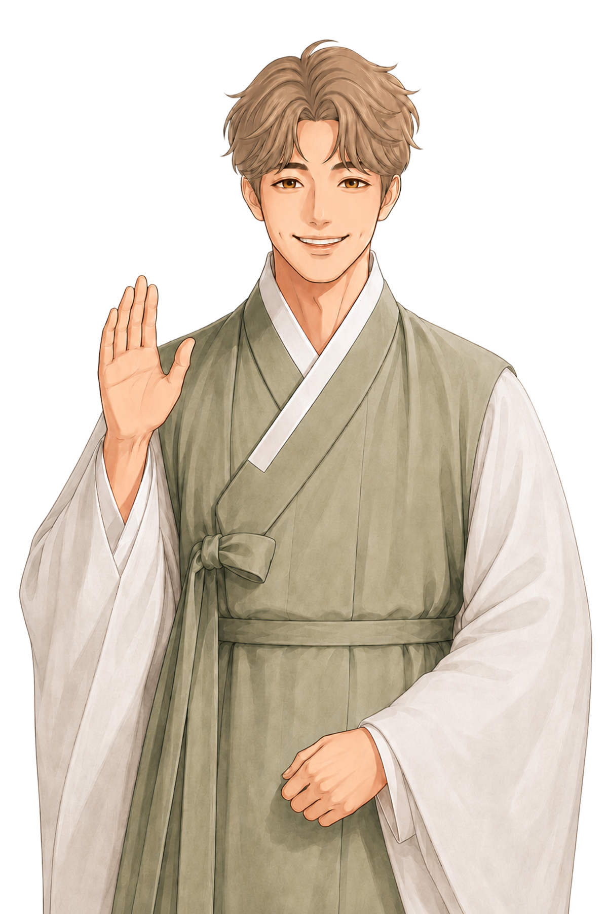
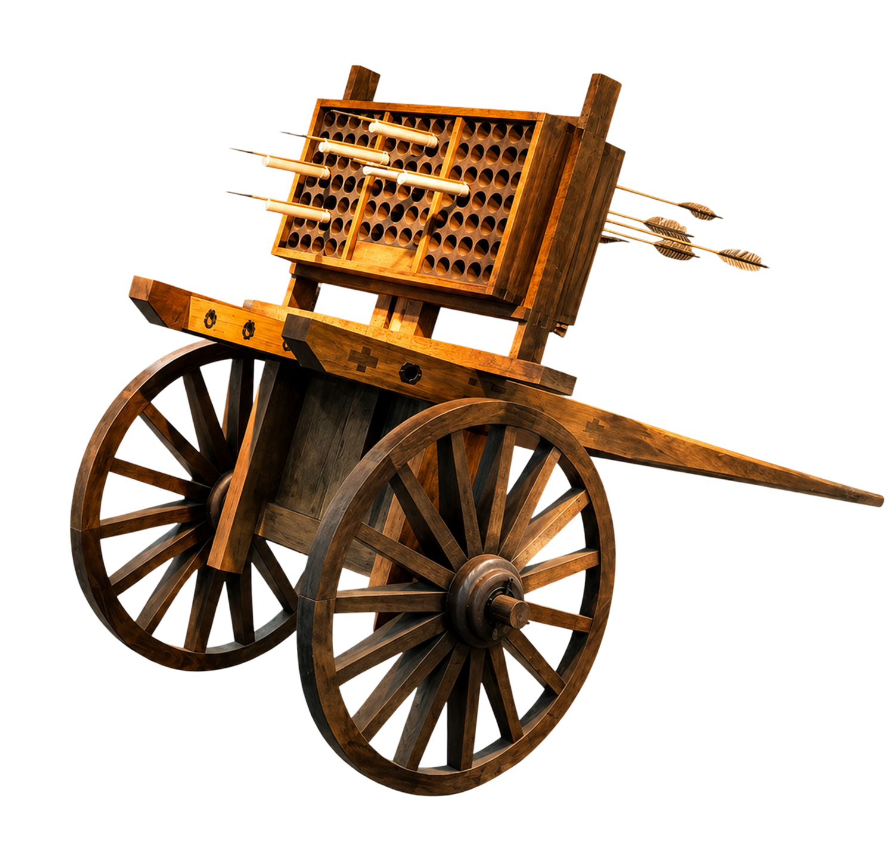
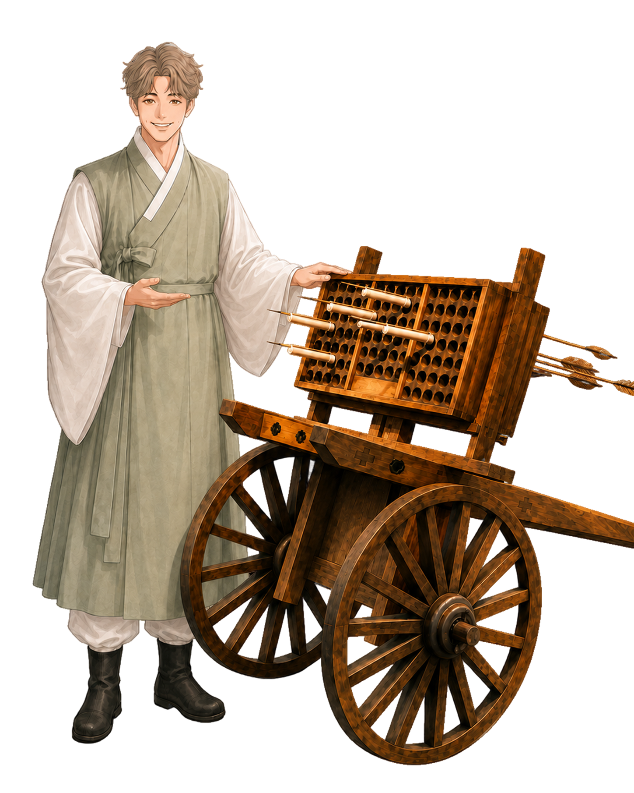
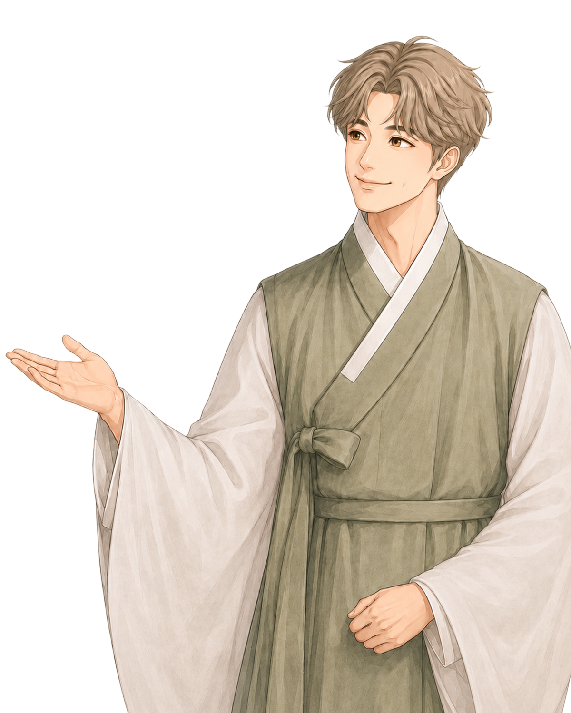
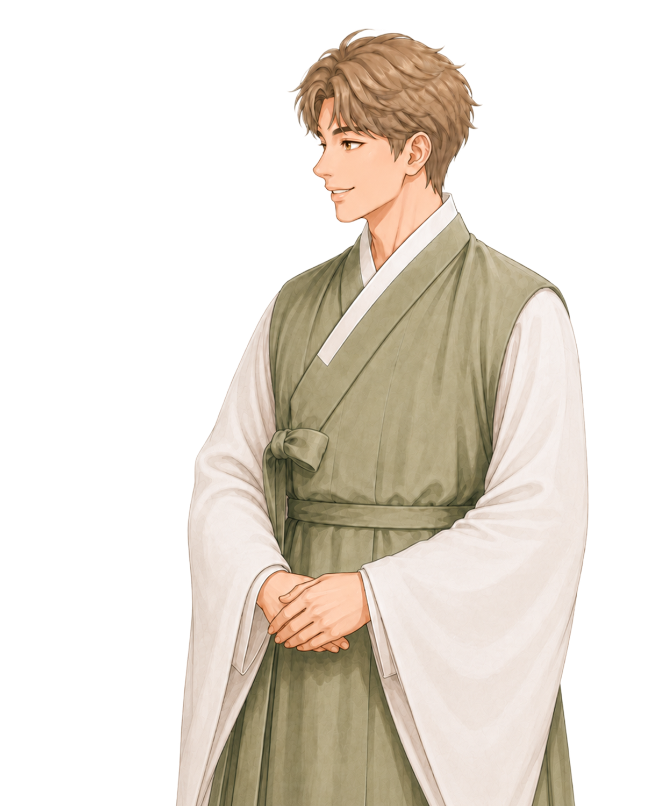

Singijeongi Hwacha · Multiple Rocket Launcher

신기전기는 조선 초기에 제작된 로켓형 화살인 중·소신기전을 대량으로 발사하는 데 사용된 장치예요.
문종이 발명한 화차의 한 부분으로, 화차의 수레 위에 올려놓고 사용했답니다.
작은 화살들이 한 번에 날아오르는 모습을 떠올려보면, 그 안에 담긴 기술이 얼마나 정교했는지 조금 느껴지죠.
신기전기는 사각 나무 기둥에 둥근 구멍이 뚫린 나무통 100개를 나무상자 속에 7층으로 쌓은 형태예요.
발사할 때는 나무통 구멍 속에 중·소신기전 100개를 꽂고, 화차 수레의 발사 각도를 조절했어요.
그 뒤 신기전 약통의 점화선을 한데 모아 불을 붙이면, 위층에서 아래층까지 차례로 100발이 발사되었답니다.
제작 설계도가 남아 있는 세계에서 가장 오래된 다연장 로켓포이기도 해요.
이제 신기전기 화차를 살펴봤다면, 왼쪽으로 천천히 이동해볼까요?
그곳에서는 또 다른 활의 형태, 쇠뇌를 만날 수 있어요.
같은 활에서 출발했지만, 쇠뇌는 조금 더 기계적인 방식으로 작동하는 무기랍니다.
쇠뇌는 나무틀 위에 활을 얹고, 손이나 기계를 이용해 활시위를 건 뒤 방아쇠로 발사하는 기계식 활이에요.
시위를 한 번 걸어 놓으면 발사할 때까지 계속 힘을 들이지 않아도 되었고, 강한 힘으로 시위를 걸 수 있다는 장점이 있었어요.
쇠뇌는 지렛대 원리를 이용한 작동법으로 만들어졌어요.
이 방식 덕분에 아이와 부인들도 사용할 수 있도록 고안되어 ‘부인노’라고 불리기도 했답니다.
시위를 걸어 둔 뒤 방아쇠로 발사할 수 있었기 때문에, 힘을 오래 유지하지 않아도 되었고 오랜 기간 사용될 수 있었어요.
조금 차가운 무기처럼 보일 수 있지만, 그 안에는 더 많은 사람이 사용할 수 있도록 고민한 옛 사람들의 기술이 담겨 있었답니다.

